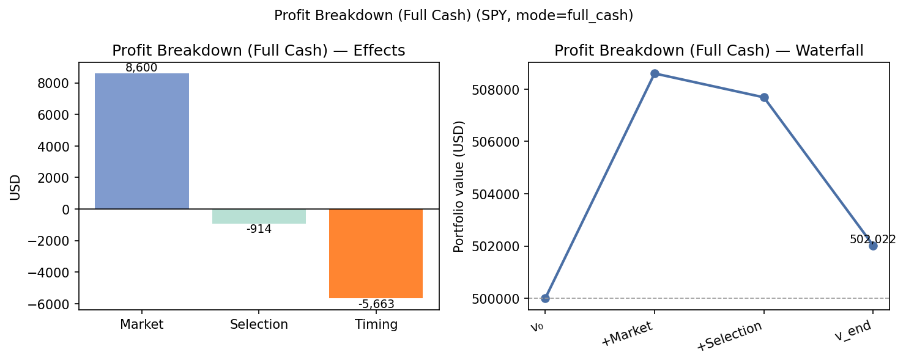
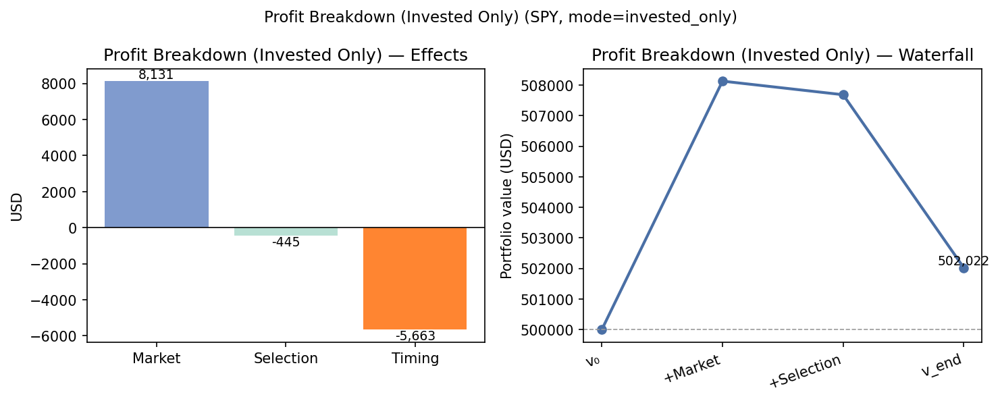
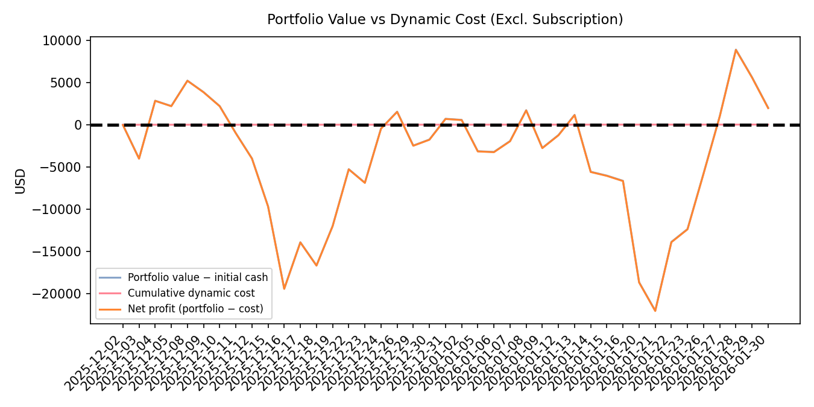

The current system is mainly limited by trading cadence / portfolio adjustment quality and workflow design, not by explicit trading cost.
Interpretation: rebalancing or trade timing reduced value versus simply holding the initial portfolio.
Weak benchmark-relative asset selection
Interpretation: the initial asset basket was not the main failure, but it did not outperform the market benchmark.
High workflow overhead without demonstrated incremental value
Interpretation: the system is computationally heavy relative to a strategy that mostly holds and underperforms passive exposure.
Opportunity cost materially exceeded dynamic cost
Interpretation: execution delay or price movement between decision and execution mattered more than commissions/tokens/infra.
Capital scale is marginal for the fixed-cost structure
Implementation idea: require trades to pass a threshold based on expected excess return, confidence, and estimated execution cost. Default to hold unless the expected timing benefit exceeds a hurdle tied to observed timing drag and opportunity cost.
Add a buy-and-hold / benchmark-aware portfolio construction layer.
Implementation idea: before execution, compare the proposed action against three baselines: current holdings, initial buy-and-hold basket, and SPY proxy. Block or downsize trades that do not improve expected risk-adjusted return versus these baselines.
Simplify the LLM workflow and test alternative model configurations.
| Metric | Value | Why it matters |
|---|---|---|
| Trading period | 2025-12-01 to 2026-01-30 | Defines the evaluation window. |
| Strategy / model | gpt-5.2 | Only one model is observed, limiting model-quality conclusions. |
| Initial capital | $500,000.00 | Scale for return and cost interpretation. |
| Final portfolio value | $502,022.49 | Ending wealth before explicit operating cost deduction. |
| Gross profit | $2,022.49 | Absolute trading gain before costs. |
| Total return | 0.40% | Low absolute return over the period. |
| SPY benchmark return | 1.72% | Passive market comparator. |
| Excess return vs benchmark | -1.32% | Shows benchmark-relative underperformance. |
| Market effect | $8,599.53 | Main positive attribution driver. |
| Asset selection effect | -$914.23 | Indicates selected assets lagged benchmark exposure. |
| Timing effect | -$5,662.80 | Main controllable performance drag. |
| Static cost | $200.00 | Largest explicit cost bucket. |
| Dynamic cost | $40.01 | Small direct trading/LLM/infra cost burden. |
| Total cost | $240.01 | Reduces gross profit by 11.87%. |
| Net economic outcome | $1,782.48 | Positive absolute result after explicit costs. |
| Net timing outcome | -$5,702.82 | Trading decisions destroyed value after dynamic cost. |
| Cost-to-gross-profit ratio | 11.87% | Measures operating-cost burden versus realized profit. |
| Opportunity cost | $3,982.68 | Execution-delay or price-movement cost; larger than gross net benefit. |
| Average latency per trade | 25,337.50 ms | Execution responsiveness issue. |
| Average daily LLM latency | 49,921.66 ms | Workflow overhead indicator. |
| Average daily input tokens | 67,980.20 | Token intensity of the decision process. |
| Average daily output tokens | 2,383.27 | Output verbosity / generation load. |
| Active trade days | 5 | Trading activity was sparse. |
| Trade frequency | 12.20% | Most days did not involve active trading. |
| Hold ratio | 72.00% | Strategy mostly held positions despite high reasoning overhead. |
| Turnover | 1.13x | Meaningful portfolio churn relative to weak timing outcome. |
| Sharpe ratio | -0.02 | Poor risk-adjusted performance. |
| Annualized volatility | 15.28% | Risk level relative to small return. |
| Max drawdown | 5.39% | Loss path was much larger than final gain. |